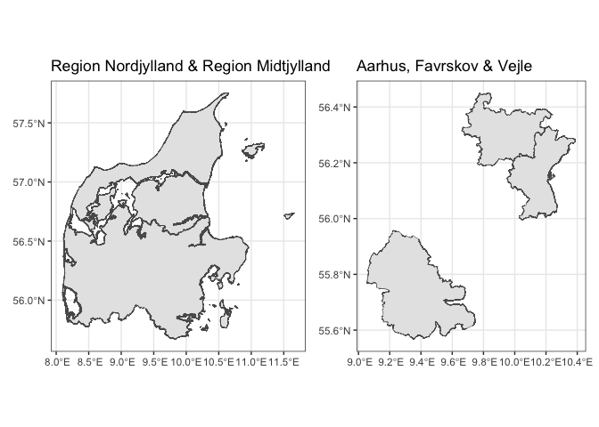

geodk provides access to Danish geospatial data.
Installation
You can install geodk from r-universe with:
install.packages(
"geodk",
repos = c(
ropengov = "https://ropengov.r-universe.dev",
getOption("repos")
)
)You can install the latest development version of geodk from GitHub with:
# install.packages("devtools")
devtools::install_github("rOpenGov/geodk")Functions
geodk provides three main sets of functions:
- Data retrieval
- Plotting
- Enrichment of statistical data from dkstat
Data retrieval
The package contains a few functions for retrieving data.
regions()
municipalities()
parishes()
constituencies()The geographic levels not included in their own functions can be accessed through get_geo().
get_geo()
prefill_cache()Plotting
The plotting functions include plot_denmark() which easily plots a basic map of Denmark and returns it as a ggplot2 object for you to edit. It also includes plot_region() and plot_municipality() which plots a subset of Denmark with focus on provided regions or municipalities.
library(geodk)
plot_denmark()
#> → Getting data on `regioner`. This usually takes 10.24s.
#> Fetching data from the API. This will take some time.
#> Reading data to `st`.
#> Converting map data to `sf` object
region <- plot_regions(region = c("Region Nordjylland", "Region Midtjylland"))
#> → Using cached response.
#> Change this behaviour by setting cache = FALSE
municipality <- plot_municipalities(municipality = c("Aarhus", "Favrskov", "Vejle"))
#> → Getting data on `kommuner`. This usually takes 13.13s.
#> Fetching data from the API. This will take some time.
#> Reading data to `st`.
#> Converting map data to `sf` object
Enrichment of statistical data from {dkstat}
The function geodk_enrich() enables you to add appropriate geographic information to statistical descriptions from the dkstat package.
dkstat::dst_get_all_data("laby01") |>
geodk::geodk_enrich()